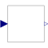
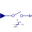

QuantizationDAC quantization effects |

|
Information
This information is part of the Modelica Standard Library maintained by the Modelica Association.
The clocked Real input signal is value discretized (the discretization is defined by parameter bits).
Parameters (4)
| quantized |
Value: false Type: Boolean Description: = true, if quantization effects shall be computed |
|---|---|
| yMax |
Value: 1 Type: Real Description: Upper limit of output |
| yMin |
Value: -1 Type: Real Description: Lower limit of output |
| bits |
Value: 8 Type: Integer Description: Number of bits of quantization (if quantized = true) |
Connectors (2)
| u |
Type: RealInput Description: Connector of clocked, Real input signal |
|
|---|---|---|
| y |
Type: RealOutput Description: Connector of clocked, Real output signal |
Used in Components (2)
|  |
Modelica.Clocked.RealSignals.Sampler Sample with (simulated) Analog-Digital converter effects including noise |
|
Modelica.Clocked.RealSignals.Sampler Hold with (simulated) Digital-Analog converter effects and computational delay |